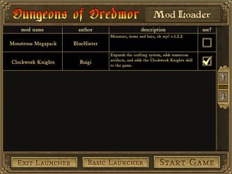

Dungeons of Dreadmor
Dieser Artikel wurde für die folgenden Ubuntu-Versionen getestet:
Ubuntu 16.04 Xenial Xerus
Zum Verständnis dieses Artikels sind folgende Seiten hilfreich:
Dungeons of Dredmor  ist ein kommerzielles Rogue-ähnliches Rollenspiel. Vor langer Zeit wurde der Dunkle Lord Dredmor durch mächtige Helden in Dungeons tief unter der Erde gebannt. Im Laufe der Jahrhunderte wuchs seine Macht immer mehr und die magischen Barrieren drohen zu zerbrechen. Ein neuer Held, welcher in den Prophezeiungen erwähnt wird, wagt es sich dem Kampf zu stellen...
ist ein kommerzielles Rogue-ähnliches Rollenspiel. Vor langer Zeit wurde der Dunkle Lord Dredmor durch mächtige Helden in Dungeons tief unter der Erde gebannt. Im Laufe der Jahrhunderte wuchs seine Macht immer mehr und die magischen Barrieren drohen zu zerbrechen. Ein neuer Held, welcher in den Prophezeiungen erwähnt wird, wagt es sich dem Kampf zu stellen...
Man kämpft sich durch 10 zufallsgenerierte Level. Ebenfalls käuflich zu erwerbende Erweiterungen spendieren dem Spiel zusätzliche Level und sorgen für langanhaltenden Spielspaß. Die Erweiterungen beinhalten unter anderem neue Gegenstände, Waffen, Monster, Räume und Fähigkeiten.
Dungeons of Dredmor war Teil des Humble Introversion Bundles.
| Hauptmenü | Tutorial |
Installation¶
Desura¶
Nach dem Erwerb des Spiels über die Internetseite oder den Client kann das Spiel installiert [1] und über diesen gestartet werden.
Steam¶
Im Store steht neben dem Basisspiel Dungeons of Dredmor die Version Dungeons of Dredmor Complete zur Verfügung. Diese beinhaltet alle käuflich zu erwerbenden Erweiterungen. Je nachdem welchen Spieltitel man über den Steam Shop oder den Client erworben hat kann man diesen anschließend über letzteren installieren [2].
The Humble Introversion Debut¶
Das Spiel aus der Aktion The Humble Introversion Bundle als .zip-Archiv herunterladen und entpacken [3] (z.B. nach ~/Spiele/). In das Spieleverzeichnis wechseln und Ausführrechte [4] für die Datei Dredmor setzen. Über Dredmor kann das Spiel gestartet [5] werden. Auf Wunsch einen Menüeintrag [6] vornehmen.
Bei jedem Spielstart öffnet sich der Launcher. Hier kann der Spieler festlegen, in welcher Auflösung das Spiel laufen soll und ob die Darstellung im Vollbild- bzw. Fenstermodus erfolgt. Mods können über den Mod Launcher gestartet werden.
|  |
| Mod Launcher |
Modifikationen¶
Im Forum sind einige kostenlose Mods zu finden. Modifikationen werden im Homeverzeichnis unter ~/.local/share/Dredmor/mod abgespeichert. Der Ordner mod muss noch angelegt werden. Den gewünschten Mod (z.B. Monstrous Megapack  ) herunterladen und das .zip-Archiv in den o.g. Ordner verschieben. Einige Mods müssen vor der Verwendung in mod entpackt [3] werden.
) herunterladen und das .zip-Archiv in den o.g. Ordner verschieben. Einige Mods müssen vor der Verwendung in mod entpackt [3] werden.
Im Spiellauncher "Mods" aufrufen und die gewünschte Modifikation (de)ativieren.
Hinweis:
Über die Seite Completed Mods Index erhält man einen guten Überblick zu den von der Community erstellten Mods.
Erweiterungen¶
Neben den Modifikationen gibt es Erweiterungen von offizieller Seite.
| Erweiterungen | ||
| Titel | Link | Kostenlos |
| You have to name that expansion pack | Herstellerseite - Steam | Ja |
| Conquest of the Wizardlands | Herstellerseite - Steam | Nein |
| Realm of the Diggle Gods | Herstellerseite - Steam | Nein |
Die Mods werden entpackt [3] und der Ordner (z.B. expansion2) in das Installationsverzeichnis kopiert.
Tastenkürzel¶
| Steuerung | |
| Taste(n) | Beschreibung |
 | Figur steuern. |
| Esc / M | Menü |
| Q | Quests |
| I | Inventar |
| K | Fähigkeiten |
| C | Charakter |

Infobox¶
| Dungeons of Dreadmor | |
| Originaltitel: | Dungeons of Dreadmor |
| Genre: | Rollenspiel |
| Sprache: | |
| Veröffentlichung: | 2011+ |
| Publisher: | Gaslamp Games |
| Systemvoraussetzungen: | Core 2 Duo/Athlon 64 Prozessor / 1GB+ RAM / 400MB+ Festplattenplatz |
| Medien: | Download |
| Strichcode / EAN / GTIN: | - |
| Läuft mit: | nativ |
- Erstellt mit Inyoka
-
 2004 – 2017 ubuntuusers.de • Einige Rechte vorbehalten
2004 – 2017 ubuntuusers.de • Einige Rechte vorbehalten
Lizenz • Kontakt • Datenschutz • Impressum • Serverstatus -
Serverhousing gespendet von